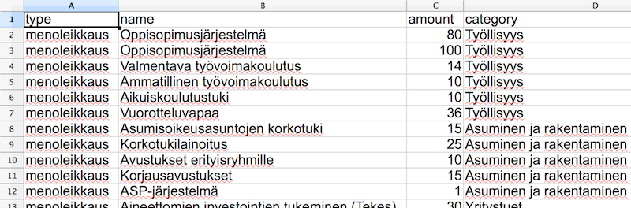
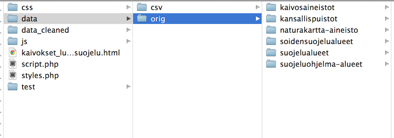

Your browser doesn't support the features required by impress.js, so you are presented with a simplified version of this presentation.
For the best experience please use the latest Chrome, Safari or Firefox browser.
Hi, how are you?
Speed visualization
&&
Creating web-like news stories
Who are we?
• Juha Rissanen
• Teemo Tebest
Plus Desk
- Started yearly 2013.
- 2 producers, 2 graphic designers, 1 nerd.
- We make stories with other news desks.
Workflow
- Fast-paced news organization.
- From idea to story in 1–2 days.
- We use existing tools or create our own.
Today
- Share our work processes and methods.
- Guide you through our cases.
- You can do this too!
The Plus Desk process
- Journalist has an idea for a story
- Together we come up with a solution on how to create the story online
Budged Puzzle
- Federal budget negotiations
- We had data of various cut targets.
- We knew about NY Times' Budget Puzzle.
- We created our own version.
Budget Puzzle
The data behind this.

Budget Puzzle
Rather boring data which was shown in an interesting way:
- Gamification
- Setting up goals
- Sharing
- Perspective for big numbers
Budget Puzzle
We put the data in a web-like format which was approachable to our readers. It was a success.
Any questions?
Mining vs. Nature
- There is a mining boom in Finland.
- Environmental issues have been a hot topic with mining.
- We wanted to see how does the future look like.
Mining vs. Nature
Data:
- Mining venture areas
- Nature conservation areas
- Natura 2000 areas
Mining vs. Nature
- Different organizations were holding the data.
- Data was in different formats.
- Finally we were managed to gather 0.4 gigabytes of .kml-formatted data
Mining vs. Nature
Lets take a look at the data.

Mining vs. Nature
Google's Tools:
- Google Fusion Tables was used to visualize the data.
- Google Maps API was used to get a desired interface.
Mining vs. Nature
- Large data (12,000 rows) which allowed users to check their point of intrests.
- Showed that over 13% of Finland is somehow connected with mining.
Fusion Tables
- Fusion Tables is a great tool for showing complex map data but it can also be used to show much simpler datasets.
Thank you!
Any questions?